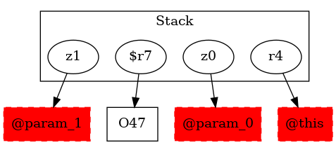

-1 : r4 := @this: Test2
-1 : z0 := @parameter0: boolean
-1 : z1 := @parameter1: boolean
47 : $r7 = new testcase.Test2
47 : specialinvoke $r7.|testcase.Test2: void |init|()|() -> class soot.jimple.internal.JInvokeStmt
48 : $r8 = new testcase.Test2
48 : specialinvoke $r8.|testcase.Test2: void |init|()|()
50 : if z0 == 0 goto return null
51 : if z0 == 0 goto $r10 = (testcase.Test2) r4
51 : if z1 == 0 goto $r10 = (testcase.Test2) r4
-1 : $r9 = (testcase.Test2) r4
52 : virtualinvoke $r9.|testcase.Test2: testcase.Test2 test2_1(testcase.Test2)|($r7)
52 : goto [?= (branch)]
-1 : $r10 = (testcase.Test2) r4
54 : virtualinvoke $r10.|testcase.Test2: testcase.Test2 test2_1(testcase.Test2)|($r8)
54 : goto [?= (branch)]
58 : return null
